- И сказал Сидящий на престоле:
- Все, творю всё новое.
- ( Откр.21:5)
- Все, творю всё новое.
Это случилось 19 января 2010 года, в 18 ч. 30 минут, в галерее Ý (Минск, пр.Победителей, 37а).
Был хороший зимний вечер, много снега, всё бело, чисто, на душе спокойно. Вспомнились слова поэта:
- На свете нет тоски такой,
- Которой снег бы не вылечивал.
Мы вошли в галерею. Огляделись.
Стало отчего-то страшно и очень грустно.
Где я? Может быть, я уже Там? Не тут? Хотелось плакать.
Все мои стереотипы и категории разлетелись, как стая воробьев при виде кота. Как называются эти арт-объекты, покрывающие стены?
Возле картин (условно назовем их так) не видно никаких табличек с названиями, указаниями размеров, материалов, техники исполнения и пр.
Видимо, они безразмерны в принципе, как и вневременны. В них нет цвета — чисто человеческой утехи, радости птиц и бабочек. Потому что они (картины) — вестники и пришельцы из Другого мира, где нет цвета, где некому ощущать его.
Мы, повидавшие немало и, казалось бы, знающие всё, что произвело искусство модернизма и постмодернизма, — мы, насмотревшиеся книг, журналов, телепередач и Интернета, побывавшие в разных странах — очутившись в небольшом зале новой галереи Ý, не могли поверить своим глазам: разве это возможно? Не сон ли это? Где мы? В какой фантастической стране?
Мы попали в нездешнее пространство, в космос, где нет никаких предметов, вещей, очертаний — а есть только точки и линии бóльшей или меньшей черноты. Что это? Материя, распавшаяся на кванты энергии, вещество, превратившееся в электромагнитные волны, траектории тяжелых, но невидимых частиц, пронизывающих Вселенную (в том числе Землю и нас самих)?
Или, может быть, это схематические изображения кинетики пространства, или схемы основных законов и фигур, созданные на небесах для руководства Бытием (наподобие плакатов по технике безопасности на стенах заводских коридоров)?
Эти графики предназначены не для человеческих глаз. Их читают сотрудники Небесного Управления, живущие на втором, третьем и т.д. уровнях бытия. Там всё так же серо и прозрачно, нематериально и безвоздушно. (Помните — Дозоры В. Лукьяненко?)
Мы были поражены смелостью Художника, создавшего эти полотна. Феномен этот возник перед очами современников, как реактивный самолет перед дикими туземцами острова Борнео в Тихом океане, или как первые кубистические картины Пикассо в 1907 году перед изумленными (и возмущенными) французскими буржуа. Смелость Цеслера показалась поистине граничащей с дерзостью, он нанес пощечину общественному вкусу, привыкшему если не к изображению красивых предметов, то, по крайней мере, к выразительным краскам и экстатическим формам. Поразило также фантастическое трудолюбие Художника, изобразившего на одной только картине (объекте 0001), к примеру, 312500 точек, или переписавшего роман Пелевина строчками длиной 2 метра на полотне 2х1 метр (об.0010) — ясно, что это было сделано с помощью компьютера, но впечатление от этого не становилось слабее.
Конечно, не всем зрителям (заполнившим залы без промежутков) было понятно представшее перед ними чудо-зрелище: это естественно и не удивительно. Но у нас возникло желание разобраться и понять.
Что мы видим на этих двенадцати полотнах? — Черные точки и черные линии — следы от движения точек. Иногда линии образуют фигуры на плоскости — круг, квадрат или спираль. Не трудно узнать в них древние и вечно сущие символы стихий, неба, солнца, земли, знаки законов природы, жизни и Духа. Великий Платон, а до него Пифагор, полагали прообразами всех вещей и стихий пять стереометрических тел, образованных из четырех планиметрических фигур. Художнику Владимиру Цеслеру для выражения фундаментальных законов Бытия достаточно двух фигур — квадрата и круга.
Начинаю просмотр с первой картины.
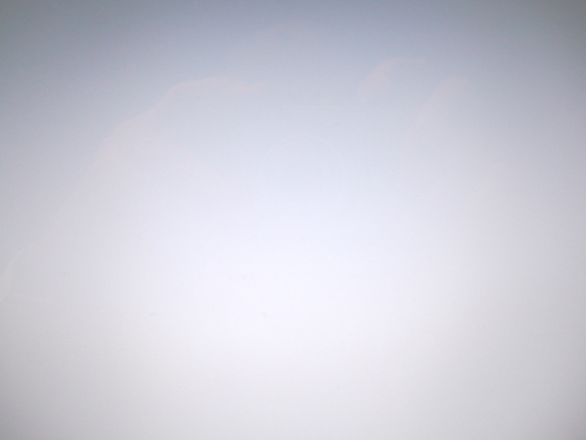
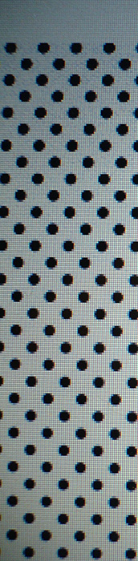
Точки, точки, точки… Что это? — Может быть, сама Пустота? Воспетая великим Гете, Бродским и Пелевиным, не говоря уж о Лао цзы и Ошо? — Или это моё естество рассыпалось прахом,
а прах разлетелся лёгким облачком
и осел на полотнах мириадами мелких точек,
или поднялся за пределы земного тяготения
и превратился в звёздную пыль?
возникает ощущение полета в космос
я лечу к неизвестной цели
а может быть, совсем бесцельно — на персональном звездолете
время остановилось
но пространство приоткрыло свои тайны.
оно оказалось заполнено
оно полно невидимой для меня жизни частиц, волн, энергетических полей.
Моё зрение не хочет примириться с отдельностью каждой точки.
Да и отдельны ли они?
Ведь их связывают незримые, но ощущаемые линии
горизонталей, вертикалей, диагоналей…
Мой глаз непроизвольно связывает их в различные фигуры —
квадраты, ромбы, шестиугольники…
Он вышивает, как по канве, любые узоры —
Геометрические и органические, статичные и динамичные,
Микроскопические и гигантские.
Это явление — связывание отдельных пятен в системы — изучили еще в ХIХ в. гештальтпсихологи.
Точки на (об. 1) — модели человеческих личностей; они не могут существовать поодиночке — они живут только в обществе себе подобных, вступают в контакты, и в то же время соблюдают дистанцию от соседних — ведь человек в своей внутренней сущности обречен на одиночество.
Не потому ли он так стремится к слиянию с себе подобным существом?
Взглянем на (об. 1) с более высокой точки зрения. — И здесь в нем обнаружим богатство содержания: эта картина проста, как нажатие пальца на клавишу компьютера, она проста, как истина,
едина и проста,
но она является в многообразии
как отражения единого солнца в тысяче капель росы
Она не только проста, но и бесконечно сложна —
в ней совмещаются два этих противоположных признака.
Эти черные точки, — сказал Бхагаван, —
Вечные частицы меня самого
Которые стали индивидуальными душами
В мире смертных.
(Об. 1) отображает лишь фрагмент вселенной, заполненный подобными точками. Концептуально она не имеет границ, хотя и экспонирована в раме по техническим условиям.
Можно ли утверждать, что элементы картины (точки) связаны прямыми линиями? Встаньте на расстоянии 1,5 — 2,0 метра против её центра и посмотрите прямо перед собой. Влево и вправо полотно суживается; прямые горизонтальные линии искривляются и сходятся в двух фокусах вне рамы. Вот неожиданная загадка: прямые или кривые эти горизонтали?
Разум склонен ответить, а глаз подтверждает: они кривые.
Это радует нас, так как мы знаем — в природе нет прямых линий. Наши линейки — только отрезки космических кривых, существующие в макромире.
Впрочем, изображение сáмой прямой линейки на сетчатке нашего глаза — тоже криволинейное, так как оно проецируется на сферическую поверхность.
Четкий правильный ритм расположения точек на (об.0001) — прообраз ритмов, гармонизующих всё бытие, — от космических до биологических процессов.
Вы всё ещё сомневаетесь в неисчерпаемости глубины содержания объекта 1? Если вы диалектик, вы спрòсите: не сопутствует ли этой умозрительной Содержательности такая же умозрительная Пустота?
Да, сопутствует. Об этом поговорим немного позже.
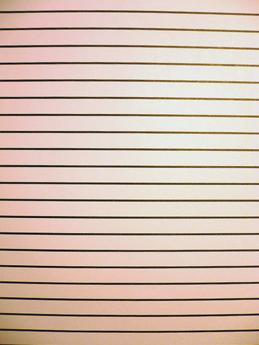
Можно ли упростить объект 1?
Оказывается, можно. Не прикасаясь ни к одной её точке, не прибавляя и не исключая ничего.
Нужно лишь запустить картину параллельно горизонту вправо или влево с достаточной скоростью — точки превратятся в линии равной толщины на всём протяжении.
Такую картину и видим мы на (об. 2). Все линии параллельны между собой и горизонтальны. Они тянутся как будто бесконечно, подобно рельсам пути от Бреста до Владивостока, подобно проводам электросети или тротуарам какой-нибудь Wall-street или 25-й авеню (я там никогда не была, но так себе представляю).
А может быть, они равны и параллельны, как шеренги солдат на парадном марше, как ряды дней-близнецов мелкого служащего — «офисного планктона», или более достойно — как строчки в поэмах Гомера, Овидия, Данте, Бродского…
Не менее значимо то, что эти линии горизонтальны.
Для человека, существа прямостоящего (pitekantropus erektus) горизонтальное положение — поза покоя: сна, отдыха, или смерти.
Оно желанно и неизбежно в жизненном процессе, особенно при больших перегрузках тела или головного мозга. Древние этруски и римляне пировали, как известно, лёжа. Погружение в бесчувственное состояние возможно только в горизонтальном положении тела: сон, нирвана, и как предел — смерть. Психоаналитик, желающий выведать подсознательное у пациента, укладывает его на кушетку. При этом затормаживается работа сознания и подкорковые импульсы получают более свободный выход наружу.
Великий утешитель человека во всех невзгодах — сон.
Если жизнь полна мерзостей — где еще спасаться, как не во сне?
«…неохота вставать. Никогда не хотелось», — сказал Поэт.
В объекте 2 — максимум покоя, замораживающего все эмоции.
Перед ней опасно долго стоять. Видишь боковым зрением, как все линии твоей жизни неумолимо сходятся справа и слева, и где-то совсем уже недалеко сойдутся в две точки, согласно теории Лобачевского.
Не потому ли именно здесь мы ощущаем непонятный подсознательный ужас?
Не гоните его прочь. Это ужас смерти.
Научитесь не бояться смерти,
как это делают полудикие мексиканцы.
Поверьте мудрым Лао цзы, Будде и шри Раджнишу,
которые приветствовали смерть
как великого мастера жизни,
без которого жизнь была бы невозможна.
Не прячьтесь от этой печальной для живых диалектики.
Принцип композиции этих объектов показан на Экспо 2.
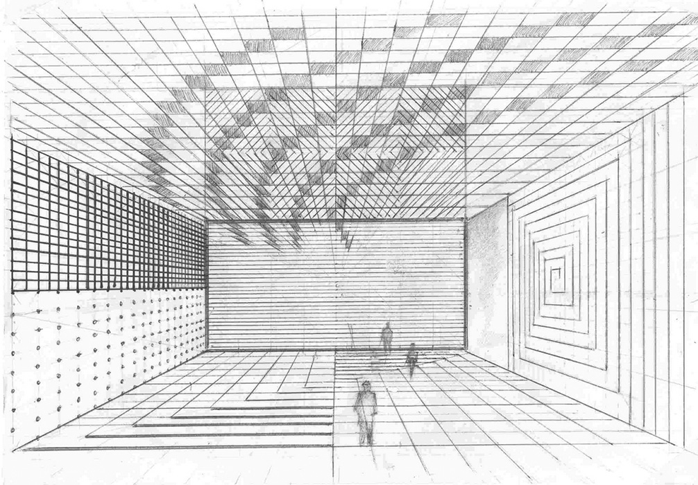
Объект 3
Он смотрит на нас большими немигающими глазами
Мы понимаем его с полуслова
Он — это Я и моё отображение
в зеркале, в чашке чая, в романах Достоевского
в рассказах Чехова, в комедиях Гоголя и трагедиях Шекспира
Это вездесущие начала Ян и Инь
такие противоположные и одинаковые
Это левое и правое — без чего не существует
ни одна вещь на Земле
Это симметрия наших глаз, рук и ног, вдоха и выдоха
Это бифуркация клетки как условие роста.
Если взглянуть с небес — увидим две горы
на них обитают боги
Или гору и яму — как вам угодно — это рай и преисподняя
как у Данте
Ведь эти формы одинаковы, хотя и неравно ориентированы
Объект 3 — наша мечта о верной любви
О радости общения, когда двое как одно целое.
Но этой мечте не суждено стать реальностью
разве что на краткий срок
Ведь раздвоение целого — это начало распада
всяческой смуты и беспорядков
как утверждали древние китайцы.
В земном мире раздвоение приводит к розни и вражде
Если бы не было у Авеля его брата Каина
жил бы он как Адам 999 лет
пас своих овечек и славил Господа.
Разделив на части ядро атома
люди создали дамоклов меч — угрозу жизни человечества
вот что такое раздвоение.
Только вечные космические сущности неделимы
Пространство Бытие Небытие Пустота Движение Начало…
Композиционный принцип (Об. 2) изображен на фронтальной стене (экспо2)
(Об.3) смотрит на нас, не мигая, беспощадно-прямым взглядом.
Он говорит: думайте…
Принцип композиции (об.3) можно увидеть на фронтальной стене (экспо3А).
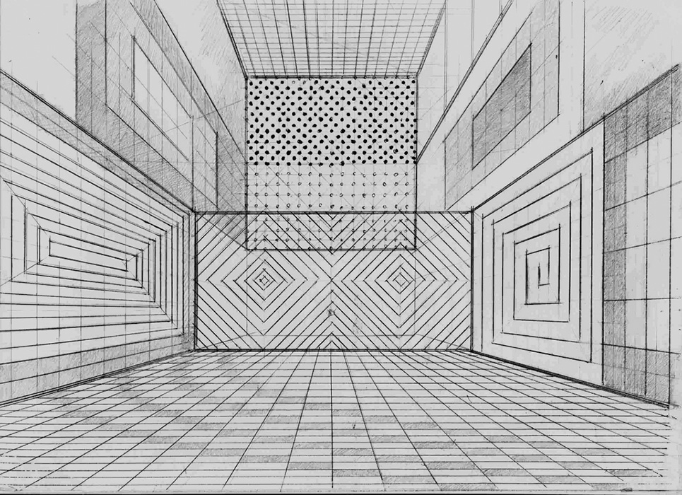
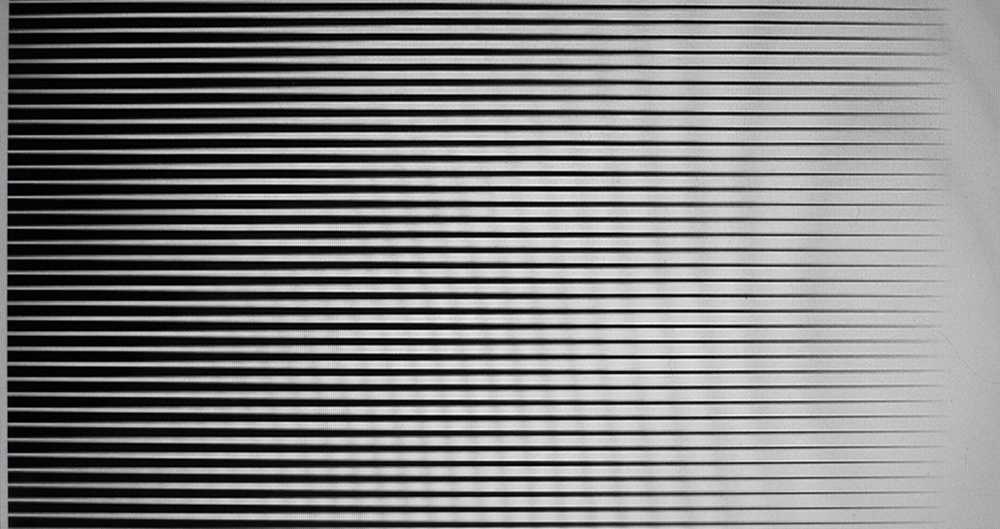
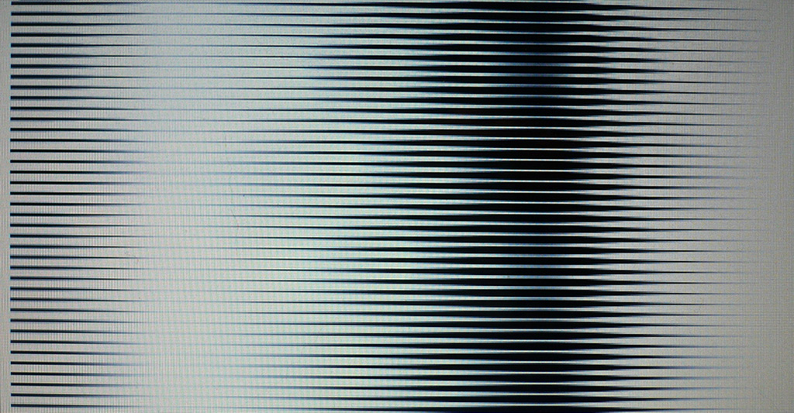
Объекты 4 и 6 варьируют одну тему: это волна, графически изображаемая как синусоида. Такие волнистые поверхности мы видим на воде, возмущаемой ветром, на снежном покрове, в песчаной пустыне, на сборчатой ткани… Ассоциации можно продолжать до бесконечности.
Всякая материя — от протона и позитрона до звезд и планет имеет свою волну. Пластический идеал красоты, воспетый Хогартом, имеет форму синусоиды (волны). Это — «линия красоты». Синусоидой изображается любой процесс — рождение, рост, увядание, возрождение.
Стили и моды в искусстве также сменяются по этой схеме. Любой процесс, протекающий во времени, происходит волнообразно.
На объекте 4 мы видим половину колеблющейся плоскости — полотна, освещенного слева; на об. 0006 — три четверти такого же полотна.
Заметим, что на выставке эти картины, в отличие от других, были положительно восприняты зрителями: они увидели нечто знакомое и понятное — переход света в полутень и затем в тень. Свет и тьма — это понятно даже и непродвинутым зрителям.
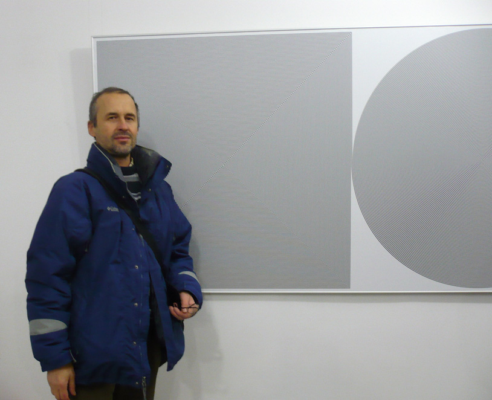
Этот объект — не диптих. Здесь мы можем увидеть миф о двух близнецах:
Яма и Ями, Ромул и Рем, Ашвины, Осирис и Исида, Гуий и Туий…
Архетипическая фигура спирали раздвоилась на квадратную и циклическую.
Нам хорошо знакома циклическая спираль.
Мы наблюдаем её в быту:
Размешивая чай в чашке, выливая воду в раковину умывальника,
Любуясь завитками ракушек или усиками душистого горошка
(а также усами Сальвадора Дали)
Замечаем спираль в расположении листьев на стебле растения,
Веток на стволе дерева, семян в цветке подсолнуха,
Чешуек на шишке сосны.
Поднимаемся на гору по тропинке, опоясывающей её серпантином;
На карте звездного неба видим спиралевидные туманности,
Которым предстоит сгуститься в новые звезды, планеты, астероиды…
В физическом вакууме самопроизвольно возникают торсионные поля — вихри, несущие энергию и образующие материю из ничего. Наконец, каждая элементарная частица атома имеет свой «спин» — она вращается по спирали.
Эта вездесущая фигура была сакрализована уже в эпоху палеолита. Змея, умеющая свиваться в спираль, стала символом земли. Другой древнейший хтонический символ — бык — иногда отождествлялся со змеей (например, в египетских «Текстах пирамид»). В Китае, Индонезии, Перу образы быка и змеи соединялись в символе «Змеебыка», рогатого дракона или змея. Он был богом земли и покровителем жилища.
Квадратная спираль — это лабиринт, вход в подземное царство, где обитал сын быка Минотавр. Здесь господствует мужское начало: прямая линия, прямой угол, число четыре. Циклическая спираль, естественно, воплощает женское начало (от доказательства воздержимся).
Таким образом, две как будто различные фигуры закономерно объединены в одном произведении — объекте 0005. В целом это сложный символ единения мужского и женского начал как условие существования мира со всеми его противоречиями и модификациями.
Объект 7
Он напоминает вид сверху на большой стог сена
Или бурт картошки
Или могильный холмик над свежим захоронением
А может быть это крышка гроба
В котором ушло в небытие традиционное искусство живописи?
Поднявшись на более высокую ступень обобщения, замечаем, что форма (об. 7) образовалась из растяжения ступенчатого квадрата 1х1м до величины 2м. Возникает вопрос: почему движение трансформации не остановилось раньше или не продолжилось дальше расстояния 2м от левой рамы?
В этом скрытый смысл, идея объекта: трансформации фигур возможны, но в пределах закона пропорций. В данном случае вся фигура не могла достичь ширины большей или меньшей, чем две высоты. Её пропорции подчиняются закону наибольшей простоты и целочисленных отношений.
Объект 7 можно увидеть на левой стене (экспо 3А).
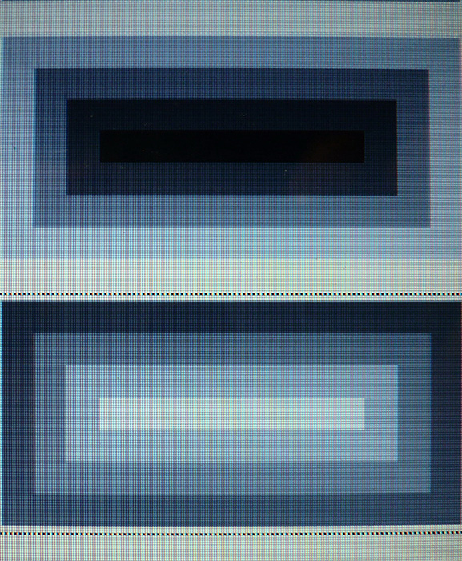
Оббъекты 8 и 9 расположены на противоположных стенах небольшого зала (ниши).
Они смотрят прямо в глаза друг другу и видят в своем визави свой собственный негатив. Там, где у 0008 светлое пятно — у 0009 темное, и наоборот. Они тоже близнецы, одновременно одинаковые и разные.
Находясь в пространстве между этими картинами, физически чувствуешь напряжение силового поля между ними, взаимодействие положительного и отрицательного зарядов, рождающее электрический ток.
Объект 10 — текст книги В. Пелевина <Generation P>
Это полотно стандартного размера, как и все другие — 200 х 100 см, но оно кажется огромным, так как сплошь покрыто мелким шрифтом.
Текст как будто призывает прочесть его, но начав читать (с любого места), вы тут же убеждаетесь, что это в принципе невозможно. Вы не прочтете за один приём хотя бы четверть этой строчки. Ваш орган зрения сопротивляется такой пытке. Вы тонете в океане печатных знаков, у вас делается головокружение, вам дурно, вы готовы упасть в обморок.
Ничего не скажешь — остроумный аттракцион!
Но — шутки в сторону. В чем смысл такого изделия (объекта)?
И есть ли в нем смысл? — Безусловно есть.
В этой картине просматривается проблема структуры текста.
Оказывается, содержание зависит от формы.
На картине как будто напечатан роман Пелевина, но прочесть его невозможно — стало быть, фактически его нет. Размещенные в другом порядке, те же буквы могут образовать книгу.
Рассыпанный или растянутый ряд знаков уничтожает эту книгу и превращает её, как и другие объекты, в серое полотно.
Почему исчезла книга? Видимо, она попала в тот же потусторонний мир, что и другие объекты на выставке.
Видимо, Там все наши произведения будут достоянием свалки истории (в лучшем случае), а в конечном счете погибнут вместе с человечеством. В этом гипотетическом будущем романы Пелевина и Золя будут уравнены в правах и тождественны по качеству. Шекспир выразил эту мысль короче всех: «Слова, слова…» — и он был прав.
Но как жить без слов? Ведь «Слово было Бог!» оно стало плотию, и жило, и живет среди нас.
- Всё чрез Него нáчало быть,
- И без Него ничто не нáчало быть,
- Что нáчало быть. /Ин.1:3/
- И без Него ничто не нáчало быть,
Думаю всё же, что гениальная выдумка Владимира Цеслера — ещё не предел возможностей манипуляции с текстами. Например, можно рассыпать этот набор, удалить нецензурные выражения, и затем (если от романа после этой процедуры что-нибудь останется) — составить Новый Текст, наполненный новым смыслом, который мог бы глаголом жечь сердца людей.
Но это уже задача другого, грядущего Художника.
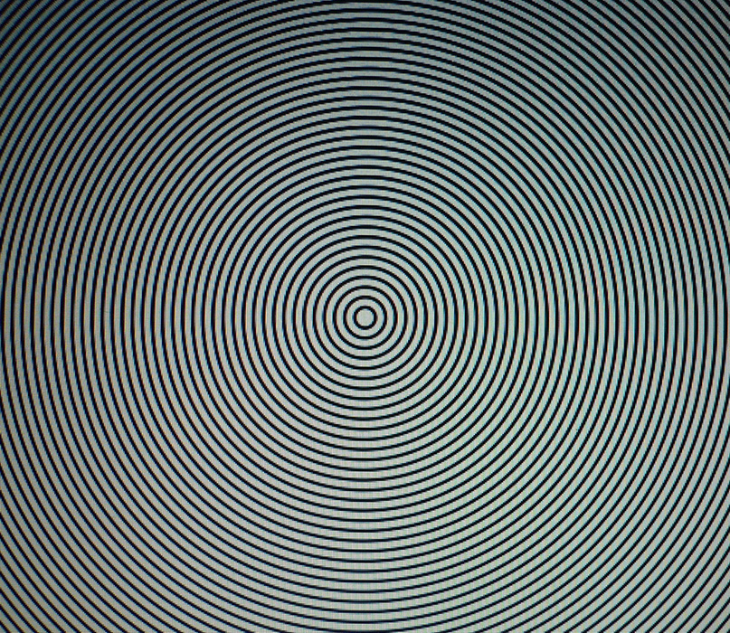
Концентрические круги черной линией по белой бумаге.
Такая фигура внушает страх.
Это предельная сосредоточенность в одном пункте, на одной мысли,
одной цели.
Это безысходность:ведь и одним крýгом можно окружить петуха,
чтобы он не сделал ни шага за его пределы.
Один круг обязанностей навязывает вам судьба
ежедневно, ежегодно, до конца.
Выйти за его пределы нельзя: богиня ANAГKH (Необходимость) не пускает.
Она не слышит ваших молений,
ее приговоры окончательны и обжалованию не подлежат.
Таков круг судьбы, которая «Покорного ведет, а сопротивляющегося тащит» (Volentem ducunt Fata, nolentem trahhunt).
Концентрические круги внушают подсознательный страх
и тяжелые воспоминания:
мишень на спинах узников лагерей смерти,
большая жирная точка в конце пути —
её не сотрёшь, не закрасишь, не соскоблишь.
Она есть, даже если мы её не видим.
Черная точка на памяти — тяжелое воспоминание —
от него кровь приливает к лицу.
Это память о поступке, которого лучше бы не совершать,
о зрелище, которого лучше бы не видеть никогда
но оно не исчезает из памяти,
как не исчезают дыры от пуль в стене сарая —
возле него расстреливали партизан.
Впрочем, отвлечемся от неприятных ассоциаций.
Ряд концентрических кругов можно понять и как вид сверху на конус — идеализированную гору, где круги имеют каждый свою высоту над уровнем моря.
Когда на сцене появляется гора, к ней слетается много мыслей.
На вершине её обитают боги (в любом количестве, хотя точка вершины не имеет физических размеров).
Точка — разве не такая же загадка, как Мир, Бытие, Единое, Дух…?
Это первичный знак. Без него человечество не могло бы создать никакой культуры.
Если точка вращается, она создает вокруг себя силовое поле. Его мощность превосходит все мыслимые пределы. На этом основано страшное воздействие арабского танца, в котором есть только одно па: вращение танцора вокруг своей оси в одном и том же направлении (по часовой стрелке). Танец продолжается 15 минут, но кажется зрителю бесконечным — напряжение силового поля вокруг танцора трудно выдерживать долго.
В романе Пелевина «ДПП НН» описан аналогичный танец чеченского бандита из секты «вращающихся дервишей», в кульминации которого он поливает всё вокруг огнем из двух автоматических пистолетов, не прекращая вращательного движения. В этой сцене у Пелевина бандиту, правда, не дают возможности дойти до экстаза, прекращая его страшный танец пулей из револьвера.
Точка в центре окружности — это наше эго — самое таинственное, загадочное и непознаваемое, сравнимое разве лишь с божеством по своей мистической природе. «Познай самого себя»…Древние умели задавать неразрешимые задачи.
Объект 12
Скромно висящее в коридоре полотно в конце просмотра — как громовой аккорд в конце симфонии. Всё было сильно, но это — сильнее всего.
Черное небо над белой землей.
Как теперь, этой зимой,
обильной снегом.
Преодоление тяжести, земного притяжения
Невесомость, полет в космосе
Но психически — невыносимая для земного человека инверсия —
легкое и хрупкое несет на себе тяжелое и прочное.
Разве что сравнить с арктическим льдом:
какие массы льда плавают на мягкой воде!
или с неотвратимостью конца — общего и Вашего, личного.
Разделить такую фигуру точно пополам горизонталью —
значит произнести окончательный приговор,
не подлежащий обжалованию.
Это значит отвергнуть все классические каноны пропорционирования,
отбросить святыню числа Φ (фи), вездесущего в нашем мире.
Принцип композиции этих объектов показан на Экспо 2.
ЛЕГКО ЛИ НАРУШАТЬ КАНОНЫ?
О ЦВЕТЕ
Уважаемый зритель! Вы, кажется, тосковали по цвету?
Идя на выставку, Вы ожидали увидеть картины, чарующие своим колоритом — ведь художник Цеслер владеет им виртуозно.
Не огорчайтесь: постояв перед любым объектом полторы-две минуты, Вы увидите цвет. Его крохотные пятнышки, как солнечные зайчики, мелькают среди черных линий и точек. Это наш глаз, переходя от черного к белому и обратно в своем непрерывном непроизвольном движении, порождает цветовые ощущения. Действует физиологический закон неодинакового времени затухания различных лучей спектра.
Но разве серый колорит не обладает своеобразным обаянием? Ведь наши сновидения похожи на черно-белое кино; будь они цветными — мы не имели бы ночью отдыха от дневной пестроты.
Большинство зрителей на выставке не поняли смысла работ Цеслера.
Они ощутили нечто вроде пустоты.
В истории живописи известны попытки «изображения пустоты»: белые картины Раушенберга, Черный квадрат Малевича, работы Бриджит Райли, состоящие из рядов точек (больших и цветных), ровно окрашенные полотна Ива Кляйна …В каждом из этих произведений искусства (без иронии и без кавычек), несомненно заложен смысл — везде разный, но везде «земной».
Авторы этих не слишком трудоёмких полотен обращались к Человеку и сообщали нечто о его жизни, об искусстве, о времени. Эти произведения были своего рода символами.
Картины Цеслера ближе к космогоническим мифам, чем к символам, в них перейдена грань человеческого (и не только потому, что они созданы машинами, а не человеческой рукой). Они сами по себе несут сообщение о Бытии, и это сообщение воспринимается на подсознательном (или сверхсознательном) уровне.
Ассоциации, которые возникли у автора этого текста — всего лишь отклик его психики на необычное зрелище и попытка как-то понять и усвоить виденное.
Потому что в нашем земном человеческом языке пока нет слов для описания космического и сверхчеловеческого Бытия.
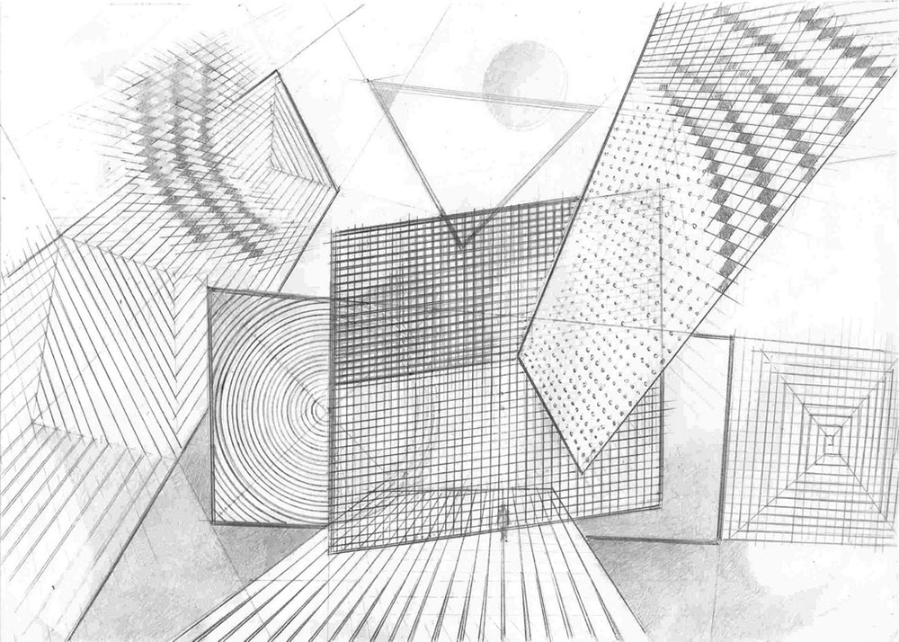
Часть 2 - Говорит доброжелательный критик >>
Л. Миронова,